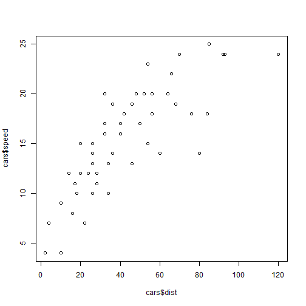

require(rCharts)
Read-And-Delete
- Edit YAML front matter
- Write using R Markdown
- Use an empty line followed by three dashes to separate slides!
Bertrand Rigaldies
Data Nerd
require(rCharts)
data(cars)
plot(cars$dist, cars$speed)

head(cars)
## speed dist
## 1 4 2
## 2 4 10
## 3 7 4
## 4 7 22
## 5 8 16
## 6 9 10
hist(cars$speed)